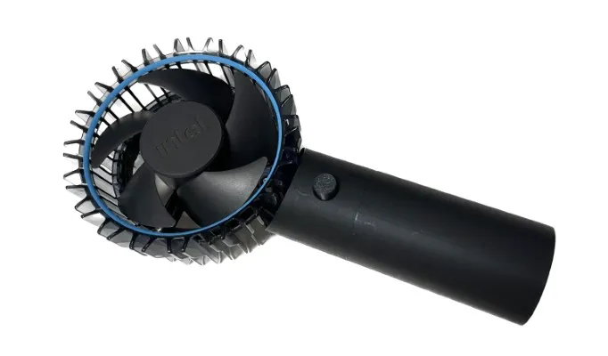
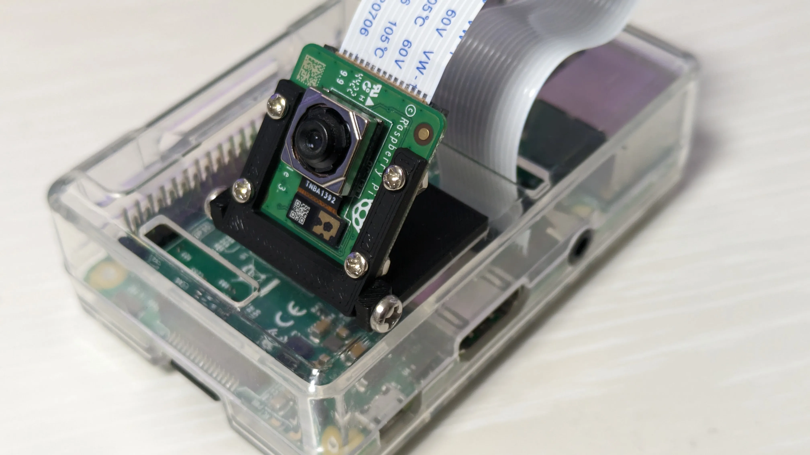
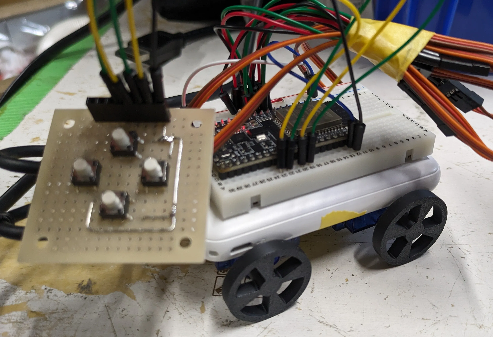
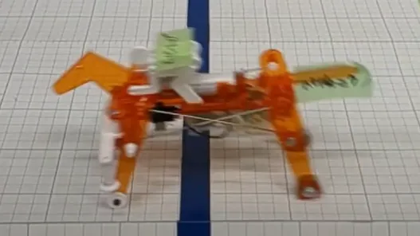
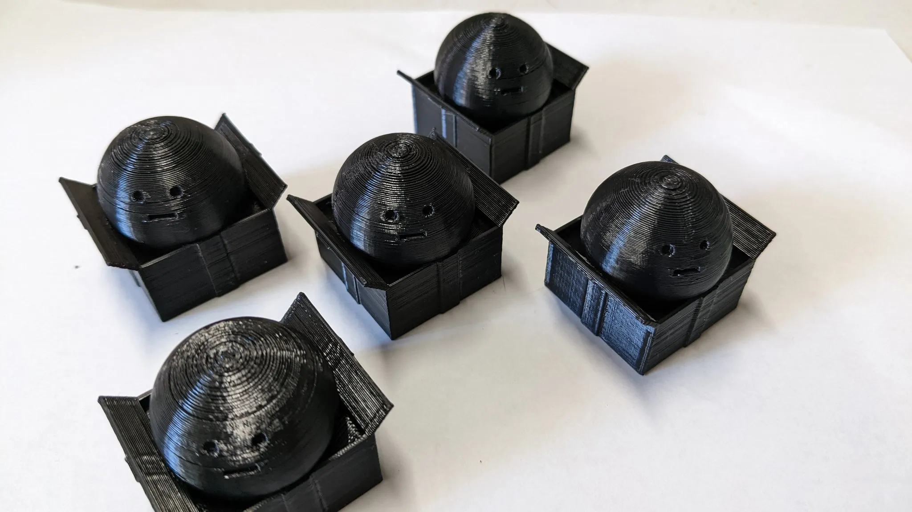
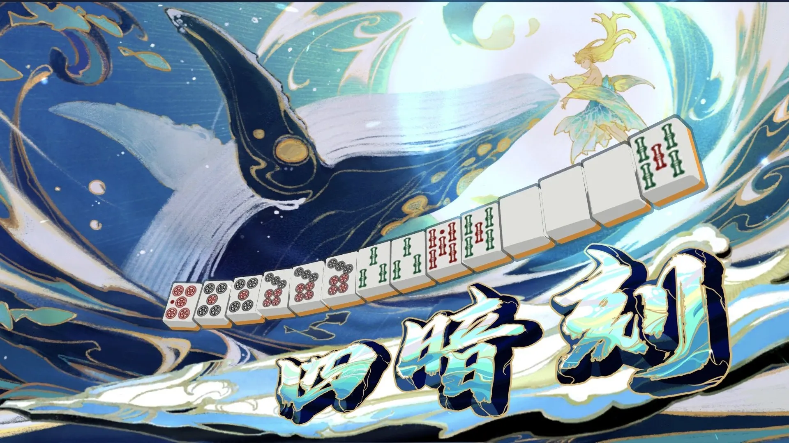
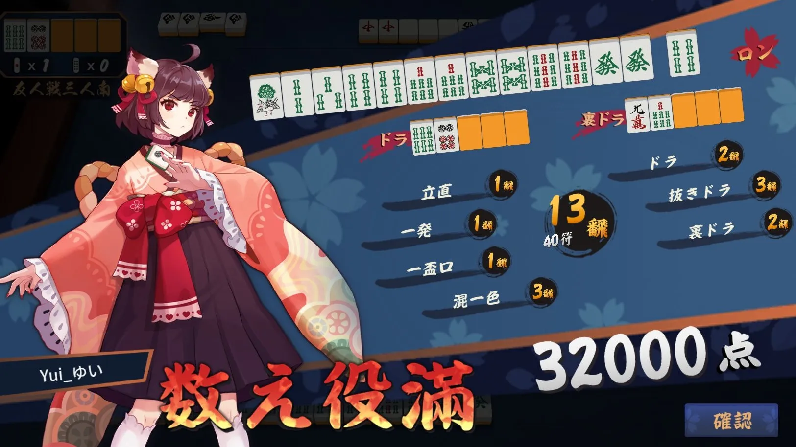
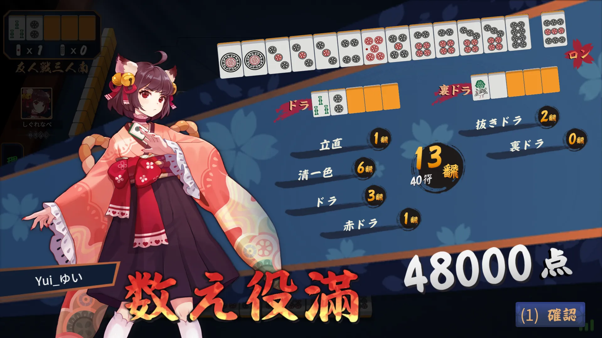

作品集
作ったものとかを紹介するページ
ソフト
Webアプリ
-
リアルタイム素因数分解
素因数分解が即時にできます。
UIがおしまい。 リアルタイム素因数分解 -
ゴヴィッショヌ揃え
-
色見本
モニターキャリブレーション用に作った。 色見本
-
Web電卓
入力欄に直接数式を打ち込んだりもできる電卓。消えた。悲しい。
-
Web単語帳
英語とか古典とかの単語覚えるのがいやすぎて勉強さぼって作った。まだ動く。
-
SNSもどき
高校で貸与されたiPad(アプリ入れたりTwitterとかのSNSにアクセスできなかった)で友達とチャットするのに使った。GASで作って、データはスプレッドシートに保存した。ユーザーIDとかログインとかルームの作成とか無駄に凝ってる。GASの仕様変更かなにかで今は壊れてログインができなくなった。
ゲーム
-
てきとうなミニゲーム
ずっと昔からあるので残してる。 てきとうなミニゲーム
-
3D戦車ゲーム
戦車を操作して敵の弾をよけながらワールド上のすべての敵を倒したら勝ち。著作権とかの関係で公開できなさそう。
-
箱殺し
高校生のころ友達と作った。自分に向って突っ込んでくる箱を片っ端から銃(玉が飛ぶだけのもの)で破壊する。わりと爽快感あるかも。
-
RPGツクールで作った謎ゲーム
高校生のころ作ったような気がする。消えたので詳細不明。
Chrome拡張機能
-
学務情報システムのシラバス検索画面のデフォルト値を変更する
履修登録の際シラバス検索の際に毎回「前学期」や「後学期」に変えるのがめんどくさくなったので作りました。 Yuki-Yui/
GakumuJouhousystem_Default_Select -
学務情報システムの成績を全部秀にする
ネタです。GPA4.0を体験できます。 Yuki-Yui/GakumuJouhousystem_GPA4
-
GoogleClassroomを使いやすくする
ClassroomのUIを改善したり、ファイルのダウンロードボタンを付けたりする。 Classroom-Mod
ハード
ハンディファン
intelのリテールクーラーを改造してハンディファンを作りました。
ハンディファンを作りました！ - ゆいブログ

クレーンゲーム
2024年の調布祭に展示するように作った。
ラズパイカメラの固定パーツ
ラズパイカメラをケースに固定するパーツ。ねじを緩めて角度調節ができる。

ミニ車(試作)
モバイルバッテリーに連続回転サーボをくっつけただけの雑なもの。 タイヤは3Dプリント品。

オーバートップ(メカダービー)
第一回調布競馬に出場。改造馬たちにほぼ無改造で挑んだ。工作精度で勝負したので直進安定性は高かった(はず)。メカダービー、直進させるのが割と難しかった。共同馬主：ハラtheニク

カメラのダミーバッテリー
カメラのバッテリーと同じ形の部品を作り、外部(モバイルバッテリーなど)から電源供給できる。電池もちを良くしたり常時給電に対応したりできる。
つまみさん
大漁だぜ

3Dモデルをダウンロード↓↓↓↓↓ Yuki-Yui/Tsumami3D
ジャンク修理
だじゃれ
ゆいのだじゃれデータベースを作ってくれました。
GitHub - DG-7D/YuinoDajare: ゆいくんのだじゃれ集
見やすいweb版はここから。
ゆいのだじゃれデータベース
その他
四暗刻
役満確定にゃ！

数え役満
ドラ爆にゃ！

